How to create a Java resource pack
Beginner guideHello everyone! Some of you might know me and some of you might not, but I've been creating resource packs for some times now and got some popular ones you might have seen. I mostly focus on optifine because of all the possibilities it gives the user and the creator, but I have also looked a lot into what was possible to do with other mods or plugins.
In this guide, I'm gonna try to make it as simple as possible to create a texture pack template for you to download and use. I'll also give you some good practice to have when you create texture packs, to help you get more traction on your pack and make them compatible with other packs. This guide is really aiming at the beginner while being the most extensive possible. I will use spoilers to hide some information that might be more advance or unnecessary to some of you to keep the guide short.
This tutorial is for 1.13+ so if you are using 1.12 and before there might be some changes you have to do for your pack to work properly. Since 1.13, not much has changed except the pack version and some texture names. If your resource pack is missing a texture that you should not, it might be one of the reason. For 1.12 and before, one of the big issues is that the blockstates and models didn't have the same layout. There is also Optifine that was McPatcher with some things that were different and less powerful at the time, so some new stuff might not work properly.
Before we start, if what you want is to simply install an existing resource pack, you can read this extensive tutorial by PMC Don't want to follow my tutorial and just want my template? You can just download it here.
ANATOMY OF A RESOURCE PACK
A resource pack needs to have 2 main elements to be detected by the game and 1 optional that I highly suggest using.
pack.mcmeta
This is the heart of your pack. Without it, your pack will not be detected by the game, it will be used to determine the version and the description of your pack. It needs to be something that will make it easy for people to know who it's from and what it is, while keeping it short.
So here is an example of this{
"pack": {
"pack_format": 7,
"description": "By xalixilax"
}
}
Having a pack version that does not match your current game version, does not mean that it will not work. Pack version 4 to 7 only had some minor change in it but most of it's content should work properly. Don't be afraid to give it a try it even if you get the warning that the pack is not compatible. It will usually still work.
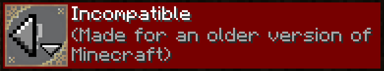Here is a list of the pack versions if you are creating a texture pack. As said earlier, I will most likely focus on version since 4 to 7 since this is what I am experienced with. For 1.8.9, there is are some guides that might be more appropriate especially when it comes to blockstates or models.
- 1 1.6-1.8.9
- 2 1.9-1.10.2
- 3 1.11-1.12.2
- 4 1.13-1.14.4
- 5 1.15-1.16.1
- 6 1.16.2-1.16.5
- 7 1.17
- 8 1.18+

For this example, it would look something like this:
{
"pack": {
"pack_format": 7,
"description": "§6By xalixilax\n§3Tutorial §f§kPack"
}
} So here you can see:
- §6 to set the text dark yellow;
- \n to skip the line;
- §3 to set the text dark aqua;
- §f§k to set the text white and obfuscated.
- §0 Black
- §1 Dark Blue
- §2 Dark Green
- §3 Dark Aqua
- §4 Dark Red
- §5 Purple
- §6 Dark Yellow
- §7 Gray
- §8 Dark Gray
- §9 Blue
- §a Green
- §b Aqua
- §c Red
- §d Magenta
- §e Light Yellow
- §f White
- §k ë░¶¿®#¥■Obfuscated
- §l Minecraft Bold
- §m Minecraft Strikethrough
- §n Minecraft Underline
- §o Minecraft Italic
- §r Minecraft Reset
- \n Skip Line
pack.png (Optional)
This image will be displayed along with the description located in pack.mcmeta when they select your pack in the game. Both of these elements help to distinguish your pack from others. This image will need to be square starting at 32x32 px. For better results you might want to use a higher resolution.
assets
This is where all your files are going to be located. This is basically just a folder. Resource packs works by overwriting assets from the directory where it is located. Usually, it will look something like this:

This is the namespace. Most of the time, this will not be changed since you want to change the base game textures. You might want to create a new namespace if you are creating textures for a mod.
blockstatesThis is the first folder that is read by the game. You will change it if you want to create variated textures for a block or when you want to modify how some blocks react. For example if you want to create a custom model when the fence post has a tag waterlogged=true.
fontContain properties for font. You will modify it when you want to create custom font or icons. An original use of this is if you want to create a guide for brewing when you open the brewing stand GUI, like this by WeNAN Studios.
langThis is where you go to change anything that is written in the game. You will modify it if you want to create a new language, change a button text or modify the name of an item.
modelsThis is where all your block models are. This section with blockstates are the most complicated to understand and use propely. At first it will be used mostly to create variated textures, but it could allow you to create 3D items or custom block models.
particleWill tell which textures to use for each particles. It could allow you to use more particle for the campfire if you want.
shadersThis is pretty new stuff and haven't had much time to play with it, but basically since 1.17, minecraft had some shader capability and this is where you go to change it.
textsContain some of the longer texts like the end credit or the splashes.
texturesThis is where most of the fun is for texture pack creators. Contains every textures, except some of the realms one, that you can modify placed by categories.
realmsSome of the language files and textures that are specific to the realm.
TOOLS
There is 3 main tools that you are gonna use. An image editor, a model editor and a text editor. If you never worked with an image editing/creation software, you might want to start with something like Pixelart.com. It is online, requirea no download, you can use it on a phone, a tablet or a web page if you want, about 90% of the things you might need are present for pixel art and is really easy to use. Add a text editor like VSCode and Blockbench then you are ready to go.
Being a graphic designer and a computer enthusiast, I've had to use a lot of different programs of all sort and really like to take advantage of my time. This is a list of program that I had to use that I thing are worth using and the reason why you might want to use it.
For advanced user and people that might want to go all in in texture pack creation, you will need some more tools that will greatly help you save time for bigger projects. For the model editor, the choice is simple, Blockbench is a powerful tool free of use with lot of great tutorial online. For the text editor, you might want to have Notepad++ and VSCode. When it come to image editor, the choice is a bit more complicated and you have a lot, but I mean, a LOT of choice. If you want to create a low resolution texture pack, I suggest going with Aseprite instead of Pixelart.com. You might want to use GIMP for realistic texture pack or if you want to create bigger format images like thumbnail. One program that is a good practice to use for multiple reason is PNG Gauntlet. I'll go more in detail in the section below with a bit more suggestion that you might want to use later.
Notepad++A really efficient program with a lot of flexibility. Allows for easy creation of files and suggestion for you to use when you type. The main reason why I use it is because it is a really quick program. Open in an instant and allow me to replace text in multiple files at the same time. This comes in handy when you want to change, for example, acacia to oak for multiple files. Another use that will be shown in a future guide, is if you want to create variated texture for a block, you can have multiple template that you always copy over and replace the name so it use the correct texture.
VSCodeThis tool is useful for syntax. It highlights any mistakes when you are working on JSON files so you don't forget something like this : <>, {}, [], '' or "".
Notepad or Bloc noteThese 2 are not worth using in my opinion. They let you make mistakes and lack basic functionality. You would be better to go with Notepad++. If you are on Mac, there is still some better alternative that you could easily find.
BlockbenchThis program is made for cubic models and does everything that you might want to do. It is supporting Minecraft 100% and is easy to use. It also allow you to create textures inside of it instead of working on flat textures. ewanhowell5195 also created an addon that let you easily modify Minecraft entity using Optifine.
AsepriteI've been used to Photoshop for quite some time and I often like to use Aseprite for some use. It need anything a pixel artist might need. Palette, layer, animation, tiling, etc. This software is really inexpensive and can also be compile for free if you want to dive in this. It is also widely used, have a lot of tutorials available and still get regularly updated. The only downside might be if you want to get away of the limitation of pixel art and want to create realistic or vectoriel.
GIMPThis one is the best choices if you want to create larger textures. It is the most powerful free option for large format image. It will let you modify any images but is not most suited for pixel art.
Photoshop and IllustratorIf you are lucky enough to have access to those 2, I think this is a no brainer. Two of the most powerful programs that you can find for image editing. Photoshop is for image editing and Illustrator is for vectoriel.
Pixilart.comThis website is a great option for beginner creator. It has all the tools you might need to create a good pixel art, like brush, palette, shape, spray, etc. It lack some feature like animations but overall, it will be perfect to dive into it and see if you like pixel art or not. On the plus side, the layout is really similar to Aseprite so even if you switch, you don't have to learn everything again and you should be able to follow what I'm doing.
Paint.NetThis software is a good beginner software that contains most of the functions you need and is free. It can be used for pixel art or larger image formats and even has the option to use plugins. That said it might not be the best choice for beginners since there is a lot of options, lacks a proper palette and use some uncommon shortcut (Most of the software usually use the same shortcut) and might not be as complete as something like GIMP or Photoshop. This make it a perfect app for people that don't want to bother with learning multiple program and just want to create texture pack. One important note about this software while creating pixel art, when you are using the line tool, make sure to have Antialiasing Disabled and when you scale a selection that Quality is set to Nearest Neighbor. This will help you get pixel perfect texture with only the desired colors.
Bulk Rename UtilityThis might seems a bit overwhelming the first time you open this software but you have no idea how much time it saved me. This software just renames files but like Notepad++ can do to the text, this can do for the extension. I often use it if I'm using for example template_0.json, template_1.json, template_2.json and I want to replace template to acacia_plank_0.json, acacia_plank_1.json, acacia_plank_2.json. I can do this in a matter of second with this tools. 3 files isn't much and I've done it with a lot more. I also used it to rename some of my optifine tiles from 0-16 to 20-36 while using Optifine CTM. I will be using it in a future guide for sure.
PNG GauntletAnother one that might seem sketchy but will be useful for texture pack creation. Just dragging your assets file in it will index all your PNG and reduce the size by a lot. This might not seems like much but it will make your pack load faster which will come handy when you test for you textures. It will also make it faster to download and for larger pack, it will help you to not reach the 50 mo limit. This is mostly just a good practice.
Ewan HowellHe created a lot of useful tools for texture pack maker which a lot are oriented a bit more toward optifine. I won't go into much details but I think this is important that I drop this here for you to explore by yourself.
There is a lot more texture editing software you might find out there but nothing that I tried that was worth mentioning. A lot might be useful at first but they might end up lacking features when you get better.
CREATING YOUR FIRST TEXTURE PACK
Let's dive in it and create your first texture pack. For this one, we will keep it simple and create one block texture and one item texture.
Extracting the resources
The first step we are gonna do is to locate and extract the default Minecraft files. This will be useful to see where everything is located and named when you work on your texture pack. To do so, you have to locate the .minecraft folder.
| Windows |
|
|---|---|
| MacOS |
|
From there, go to the folder version and open the version folder you wish to extract the
content from. For me, it's gonna be 1.17.1. From there you should see 1.17.1.jar. With a data
compressing tool (In my case I am using Winrar) I will Right-Click ➡Open with Winrar. You should
now see a folder called assets. Just copy it somewhere you will remember. This will be one
of you reference for resource pack creation.
Creating the folders
For this part, it consists of simply creating the folder you're gonna need.
Let's start with where you are gonna need to put your textures. Since we are only creating a simple
resource pack, we won't need much. The first file we are gonna create is in your
resourcepacks folder. This one is located at the same place as the version
folder from above.
Right-Click ➡ New ➡ Folder and name it the name of your pack. You can always change it
later. For this example, it's gonna be named Tutorial.
In that folder create assets. Remember the assets folder you just extracted? From now on
you will always need to follow the structure of it. For this tutorial we are gonna replace one item
texture and one block texture. They are respectively located in:
Tutorial\assets\minecraft\textures\item\itemToReplace.png
Tutorial\assets\minecraft\textures\block\blockToReplace.png
Time to create those folders. So you need minecraft inside of assets,
textures inside of minecraft then finally item and
block inside of textures. In the end, you should have something that looks
like this:
| 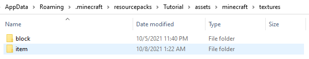 |
DO NOT JUST COPY OVER THE ASSETS FOLDER YOU EXTRACTED
This is something I see way too often when reviewing new packs and it always result in change required. It is way more work deleting afterward what you didn't create than just creating new folder. There is actually multiple reason why you should not do it and it goes as follow:
This constitutes as a copyright infringement. It might seems like nothing, but in the worst case, you could get sued for using their assets. This has probably never happened with Minecraft content but better be safe than sorry;
It will make your pack way bigger. This will result in longer pack load time and believe me, you're gonna do it a lot when testing your textures. When I'm using xali's Enhanced Vanilla, it can take 3 times longer than some small pack like xali's display, which is just 1 file;
The latest issue you're gonna have is compatibility. Since it is overwriting every texture of the game, all the pack installed below yours won't work. If for example someone want to use your sword pack over Stay True, it won't be possible.
Creating the pack.mcmeta
For your packs to work properly, you're gonna have to create the pack.mcmeta. To create it, simply Right-Click ➡ New ➡ Text Document then rename this file including the extension to pack.mcmeta. You can go back to the pack.mcmeta section above if you need some help with the codes.
Template ➡ pack.mcmetaCreating your first textures
I am not the best pixel artist and I am far from it, but I've studied Jappa style quite a lot to be able to reproduce blocks that look like it and fit well in the game. In the spoiler down below there is a quick and complete tutorial on how I do it using Aseprite. This is in my opinion the best beginner tool you can have. It is inexpensive, you can get it free if you feel like compiling the source code, is really complete and easy to understand. Pretty much everything pixel art related is gonna be included in this program. For those that don't want to pay yet, I suggest using Pixilart.com for now. Every tools are about the same and easy to understand.
For people that already know how to create textures, you can just skip this part. I will just go over some of the basics to let you get started. I won't really go in depth.
This part is optional. We will create a palette based off of an existing block. This will help us create a block that will fit properly with other similar block. If you want to entirely revamp a block, feel free to create your own palette. Just a side note, block usually use a 7 colors palette with sometime 1 or 2 accent colors. For example the andesite that have some light blue pixel or dirt that have grey pixel in it. There is some exception but usually, a 5, 7 or 9 colors is a good starting point. If you want to use 2 main colors, you might want to use multiple color palette or an extended one that goes from your first color to your second.
On Pixelart.com you will have to go in File ➡ New then click on Open Image. When it's done, on the right side you will see a pre generated palette. Click On the little "+" above it and create a new palette. It will clear what was previously there. Below the palette, you will see "◎", click on it. Here you have you palette generated from your image.
To help us a bit, we will reorganize our colors, by lighting. Click on the "🠗"➡ Sort By Brightness. You can also click on the color, then move to it's border. You should be able to drag and drop it.
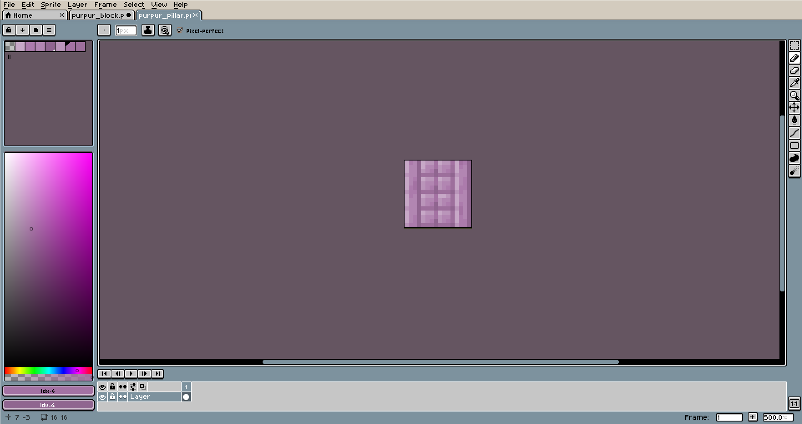To start of, let's start by using the bucket G and fill the texture with the 4th color. This will be the base color and will help you for the rest.
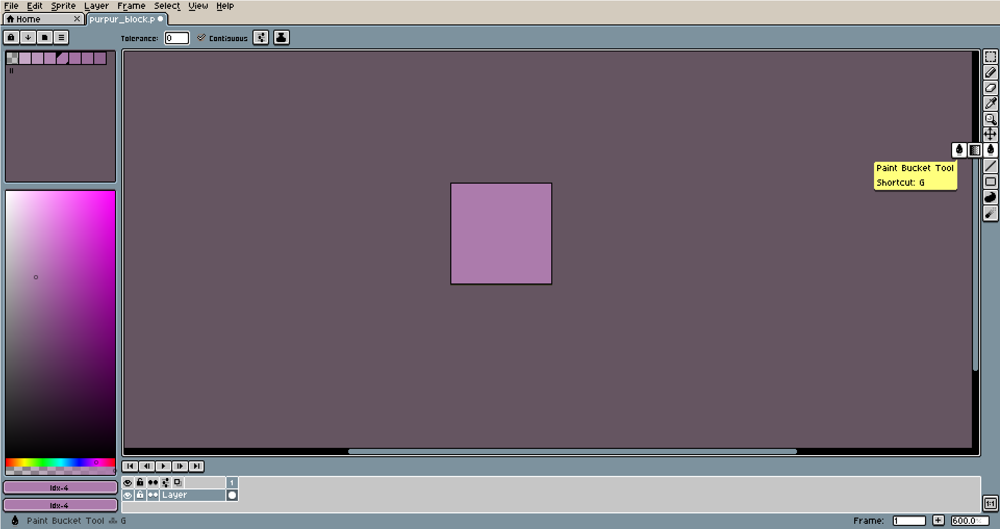Now comes the fun part, creating the brick shape. I usually go with the darkest color then just drawsome line with the pencil B. Feel free to try some shape. usually, you will have adark seam at the bottom and the right. This will make this more consistent with other Minecraft blocks.
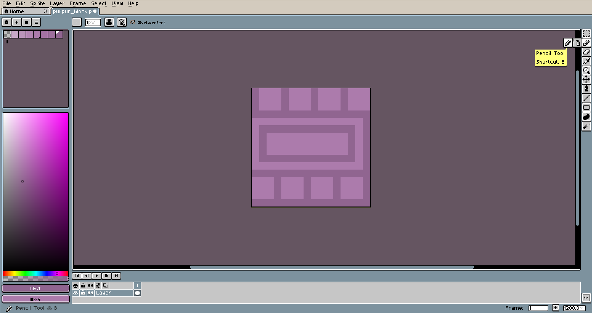Now that your block have his general texture, it is time to tile our block. This will let us see how it looks when the texture is side by side. This will help us see if some pixels from the left/right or top/down of your texture don't really look good together.
Then let's continue by adding some light to it. With the lightest color you have, we will add some pixels in the corner of each brick. No need to be consistent, just a general look. At this point you should have a good idea of what you block will look like.
On Pixelart.com go on the right and click Option ➡ Tile Mode
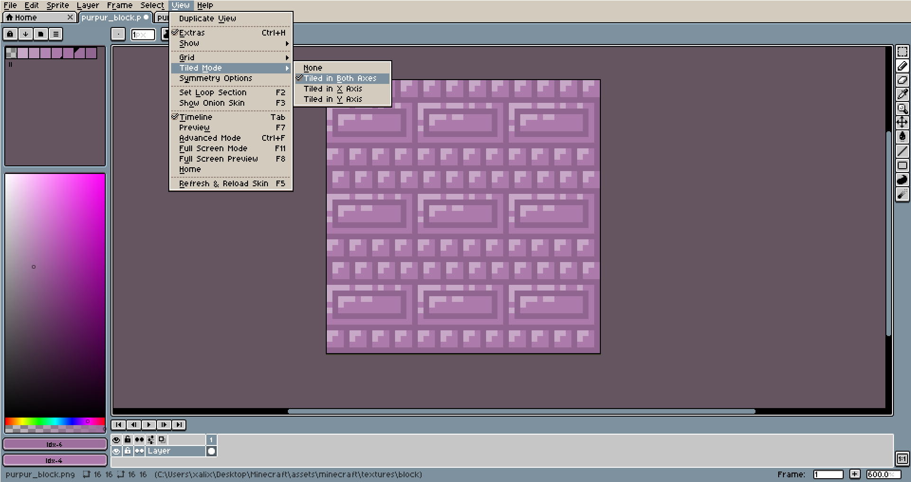It is now time to add more detail to your texture. The seam usually have 2 main colors and sometime a 3rd one. You can see it like in the planks which reuse the 5th colors as shadow and seam. In my case, I'm gonna go with 2 colors only. So I take my 6th colors and just add random spot. For shiny texture, you might want to it more toward where you have your lightest color.
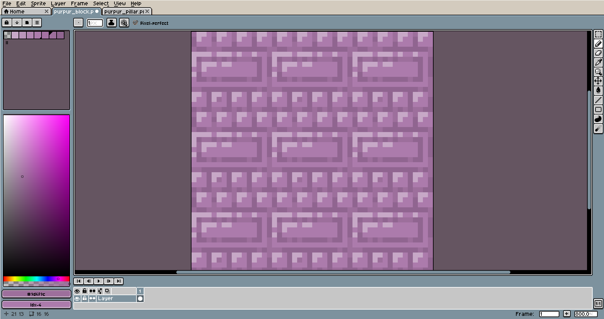Now we will add some shadows. This will go on the opposite side of your first color.
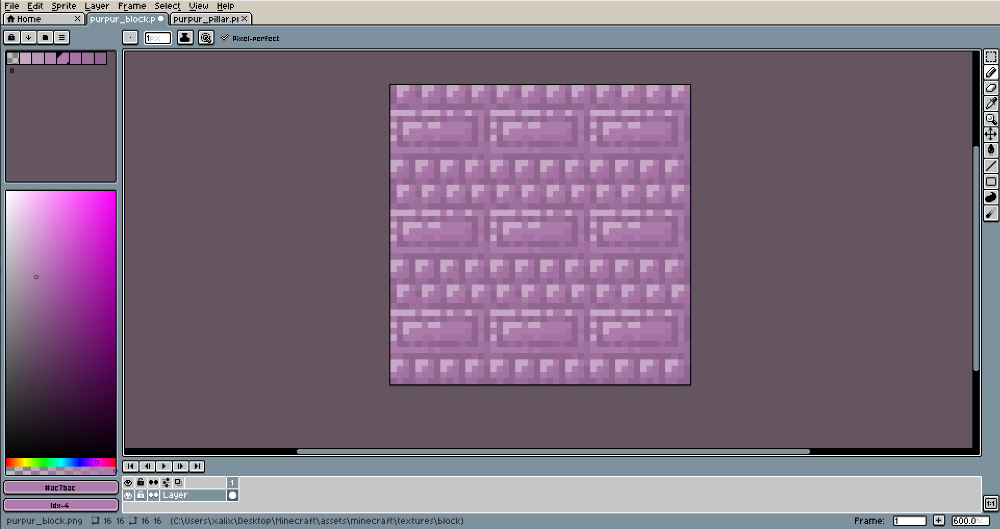In the two next pictures, I'm progressively adding some more colors so I'm taking advantage of the 7 I have.
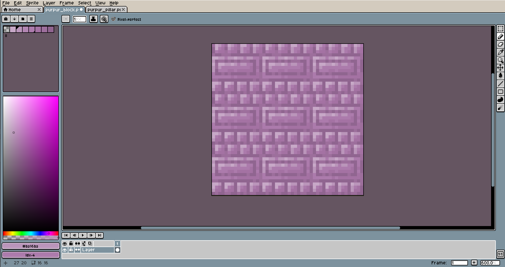 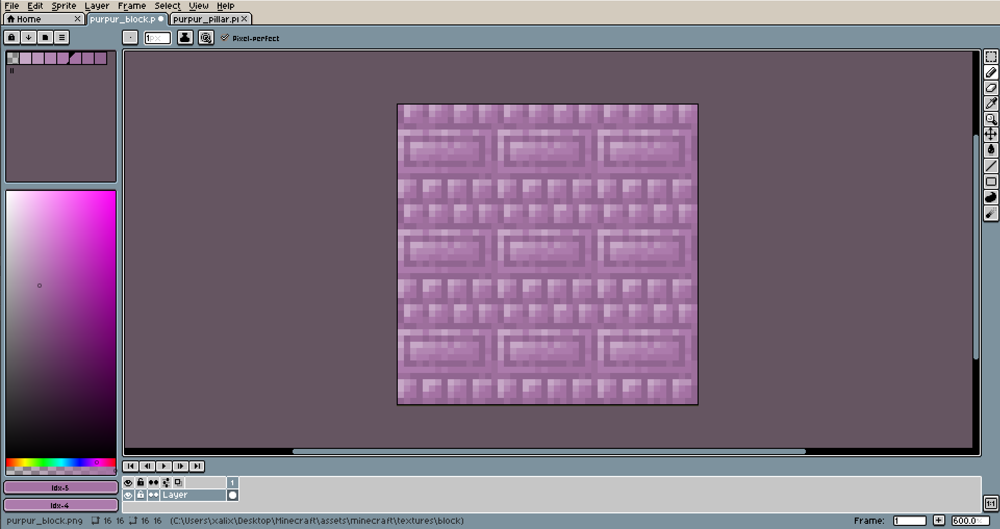When satisfied with the texture, it's gonna be time to adjust some of the colors. In my case, I wasn't really happy with how the corner of the big brick looked, so I made the seam darker and use the 6th color to give it a bit more depth. I also adjusted some of the other colors so it look a bit better.
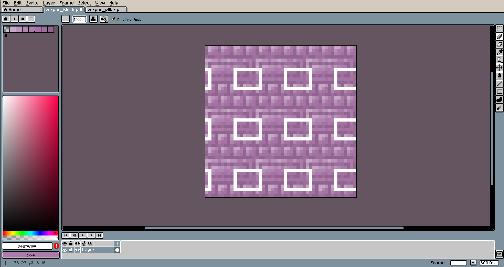Here is the final result. Usually I like to create more version of my texture to see if I could make it look better. Maybe trying to remove the inner seam, give it a lighter look, play with the shape of some of the bricks, but for this tutorial, this is a great start. The rest will be up to you to experiment with. Having multiple iteration of a final block is a quick and easy way to create something you really like. It often don't take that much time and allow you to create something entirely different.
 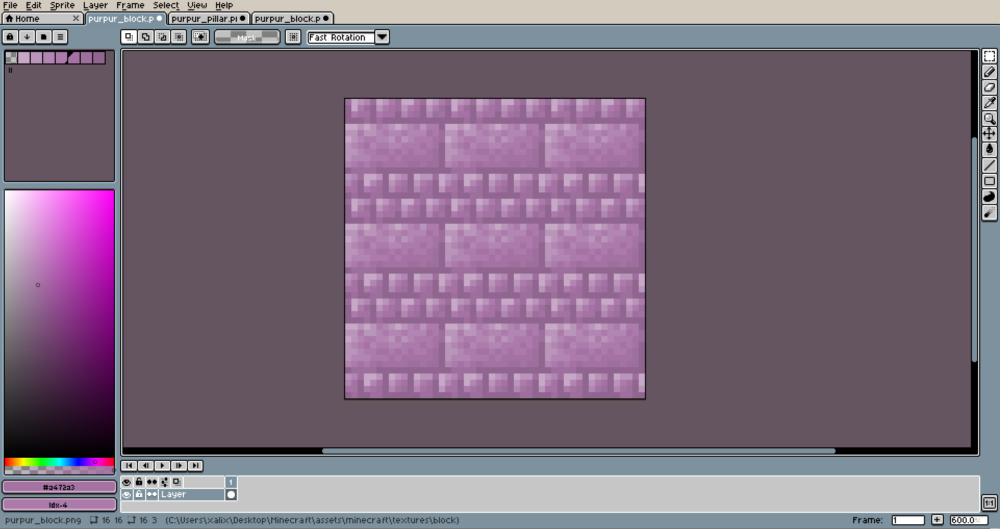 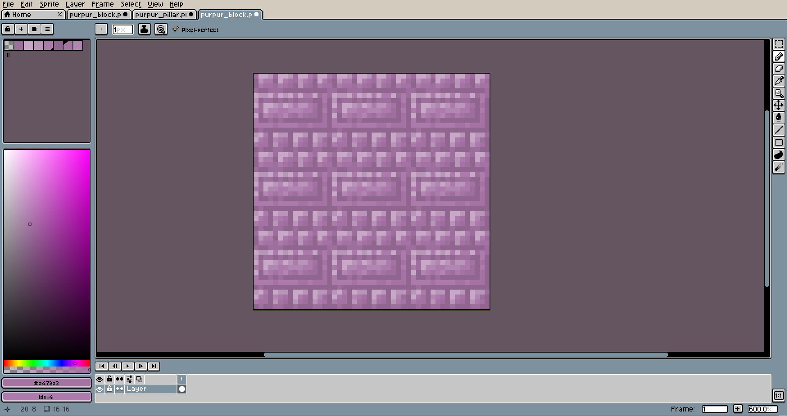 Now File ➡ Save
as... or press CTRL + ALT + S and save it as
purpur_block.png. The extension name need to be .png or it won't work
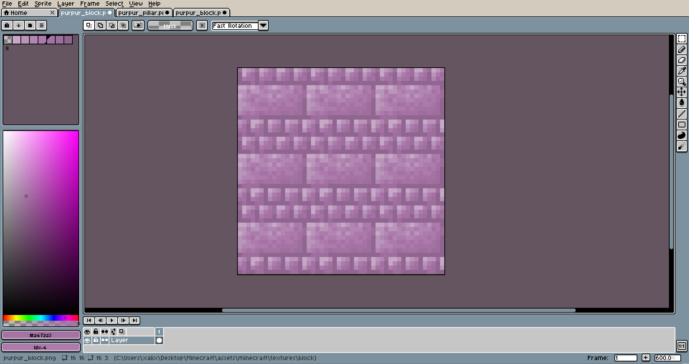 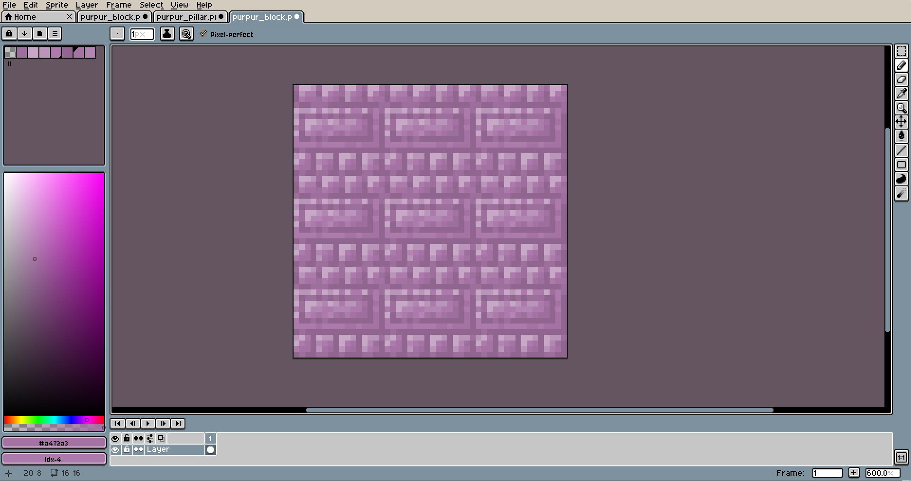 Now File ➡ Save
as... or press CTRL + ALT + S and save it as
purpur_block.png. The extension name need to be .png or it won't work
For this item, lets create something a little different and create a bloody battleaxes. We will use this one to replace the iron axe. The process will be similar at first. I decided to use the palette from the cauldron, and used the stick as a base for my item. This saves some time and allows me to point some things out. If you look at it, you can see the the bottom of the stick is a darker color than the top of it. This is something that is gonna be true for every Minecraft items. Most of the time it will be only 2 colors for the border but it can be a little more. It help to give some depth to an item that would otherwise look way too flat.

First thing that I always do when I create an item is to start by drawing solid color. This help me get the shape right right at the start. You can always modify later, but really help you for the rest.

Now lets add the borders. As you can see, the bottom side has the darkest color (7th color) and the top one had something a bit lighter (6th color) I also took the liberty to use a third one since I want it to look a bit more shiny.

This step consist of adding the remaining colors. Usually lighter colors will go top left while darker will go bottom right. Of course I'm trying to follow the curve that the item would have. If you look you can see a curve following the top and bottom edge with lighter and darker colors to highlight the sharpness.

Let's add some red to imitate the blood.

And why not some grip and longer stick for better proportions.

And done with the item. Just need to save it and we are done for this part. It is now time to put this in your game. Now File ➡ Save as... or press ctrl + alt+ s and save it as iron_axe.png. The extension name need to be .png or it won't work
Putting everything together
Now that you have your pack.mcmeta, your 2 images and all your files created, it's gonna be time to put everything together. So in the folder Tutorial you will place pack.mcmeta. If you have created a pack.png, you also need to place it there. For testing purpose, you can download the one below. When you are done, you will need to place both of your texture there:
Tutorial\assets\minecraft\textures\item\iron_axe.png Tutorial\assets\minecraft\textures\block\purpur_block.png Template ➡ pack.png 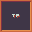
Template ➡ purpur_block.png
Template ➡ iron_axe.png 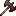
Testing your pack
Now that everything is in place, it is time to test it and see what you did. Hop in the game, find your pack and add it to your selected pack. Press done and watch the result!Sharing your pack
This step is often not done properly yet really easy to do. Instead of adding Tutorial to the zip, we will add pack.png, pack.mcmeta and assets to the zip. Doing it this way, people will be able to simple download, place it in the resourcepack folder and it will be ready to be used.
Template ➡ Tutorial.zipI hope that you liked this tutorial and it helped you create your first texture pack. This is one of multiple that I will do. If you think anything was not clear enough or want to suggest tutorial ideas, let me know. I you really liked it, you can support me on Patreon where I post preview and temporary exclusive content. You can also get a list of my templates there.